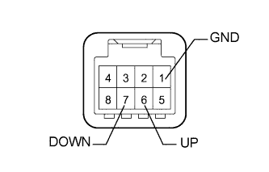
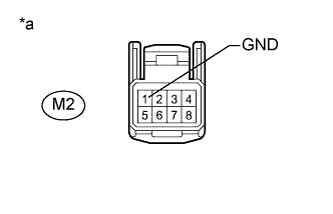
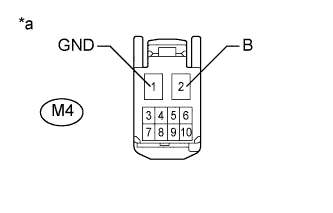

СИСТЕМА УПРАВЛЕНИЯ ЭЛЕКТРИЧЕСКИМИ СТЕКЛОПОДЪЕМНИКАМИ > Невозможно управлять электрическим стеклоподъемником левой задней двери с помощью переключателя электрического стеклоподъемника левой задней двери |
| 1.ПРОВЕРЬТЕ DTC (B2312) |
Проверьте, выводится ли код DTC B2312 (Нажмите здесь).
|
| ||||
| OK | |
| 2.СНИМИТЕ ПОКАЗАНИЯ ПОРТАТИВНОГО ДИАГНОСТИЧЕСКОГО ПРИБОРА (ПЕРЕКЛЮЧАТЕЛЬ ЭЛЕКТРИЧЕСКОГО СТЕКЛОПОДЪЕМНИКА ЗАДНЕЙ ДВЕРИ) |
В режиме Data List проверьте работоспособность электрического стеклоподъемника задней двери (Нажмите здесь).
| Информация на дисплее прибора | Измеряемая величина / диапазон измерения | Нормальное состояние | Замечание по диагностике |
| RL Door P/W Up SW | Сигнал ручного подъема электрического стеклоподъемника левой задней двери / ON (ВКЛ) или OFF (ВЫКЛ) | ON (ВКЛ): Переключатель ручного подъема электрического стеклоподъемника левой задней двери задействован OFF (ВЫКЛ): Переключатель электрического стеклоподъемника левой задней двери не задействован | - |
| RL Door P/W Down SW | Сигнал ручного опускания электрического стеклоподъемника левой задней двери / ON (ВКЛ) или OFF (ВЫКЛ) | ON (ВКЛ): Переключатель ручного опускания электрического стеклоподъемника левой задней двери задействован OFF (ВЫКЛ): Переключатель электрического стеклоподъемника левой задней двери не задействован | - |
|
| ||||
| OK | |
| 3.ВЫПОЛНИТЕ ДИАГНОСТИКУ В РЕЖИМЕ ACTIVE TEST С ПОМОЩЬЮ ПОРТАТИВНОГО ДИАГНОСТИЧЕСКОГО ПРИБОРА (ЭЛЕКТРИЧЕСКИЙ СТЕКЛОПОДЪЕМНИК) |
Выберите режим Active Test, с помощью портативного диагностического прибора подайте команду управления и убедитесь, что электродвигатель стеклоподъемника работает нормально (Нажмите здесь).
| Информация на дисплее прибора | Испытываемое устройство | Диапазон регулирования | Замечание по диагностике |
| Power Window | Электрический стеклоподъемник со стороны пассажира | OFF/UP/DOWN | - |
|
| ||||
| OK | ||
| ||
| 4.ПРОВЕРЬТЕ ПЕРЕКЛЮЧАТЕЛЬ ЭЛЕКТРИЧЕСКОГО СТЕКЛОПОДЪЕМНИКА ЛЕВОЙ ЗАДНЕЙ ДВЕРИ |
|  |
Снимите переключатель электрического стеклоподъемника задней двери (Нажмите здесь).
Измерьте сопротивление в соответствии со значениями, приведенными в таблице ниже.
| Контакты для подключения диагностического прибора | Положение переключателя | Заданные условия |
| 6 (UP) - 1 (GND) | Ручной подъем | Менее 1 Ом |
| 7 (DOWN) - 1 (GND) | Ручное опускание | Менее 1 Ом |
| 6 (UP) - 1 (GND) | Не приведен в действие | 10 кОм или более |
| 7 (DOWN) - 1 (GND) | Не приведен в действие | 10 кОм или более |
|
| ||||
| OK | |
| 5.ПРОВЕРЬТЕ ЖГУТ И РАЗЪЕМ (ПЕРЕКЛЮЧАТЕЛЬ ЭЛЕКТРИЧЕСКОГО СТЕКЛОПОДЪЕМНИКА ЛЕВОЙ ЗАДНЕЙ ДВЕРИ - МАССА) |
|  |
Отсоедините разъем M2 переключателя электрического стеклоподъемника задней двери.
Измерьте сопротивление в соответствии со значениями, приведенными в таблице ниже.
| Контакты для подключения диагностического прибора | Условие | Заданные условия |
| M2-1 (GND) - масса | Всегда | Менее 1 Ом |
| *a | Вид спереди разъема со стороны жгута проводов: (к переключателю электрического стеклоподъемника левой задней двери) |
|
| ||||
| OK | |
| 6.ПРОВЕРЬТЕ ЖГУТ ПРОВОДОВ И РАЗЪЕМ (ПЕРЕКЛЮЧАТЕЛЬ ЭЛЕКТРИЧЕСКОГО СТЕКЛОПОДЪЕМНИКА ЛЕВОЙ ЗАДНЕЙ ДВЕРИ - ЭЛЕКТРОДВИГАТЕЛЬ СТЕКЛОПОДЪЕМНИКА ЛЕВОЙ ЗАДНЕЙ ДВЕРИ) |
Отсоедините разъем M2 переключателя электрического стеклоподъемника задней двери.
Отсоедините разъем M4 электродвигателя стеклоподъемника.
Измерьте сопротивление в соответствии со значениями, приведенными в таблице ниже.
| Контакты для подключения диагностического прибора | Условие | Заданные условия |
| M2-6 (UP) - M4-10 (UP) | Всегда | Менее 1 Ом |
| M2-7 (DOWN) - M4-7 (DOWN) | Всегда | Менее 1 Ом |
| M2-6 (UP) - масса | Всегда | 10 кОм или более |
| M2-7 (DOWN) - масса | Всегда | 10 кОм или более |
|
| ||||
| OK | |
| 7.ПРОВЕРЬТЕ ЖГУТ ПРОВОДОВ И РАЗЪЕМ (ЭЛЕКТРОДВИГАТЕЛЬ СТЕКЛОПОДЪЕМНИКА ЛЕВОЙ ЗАДНЕЙ ДВЕРИ - АККУМУЛЯТОРНАЯ БАТАРЕЯ И МАССА) |
|  |
Отсоедините разъем M4 электродвигателя стеклоподъемника.
Измерьте напряжение в соответствии со значениями, приведенными в таблице.
| Контакты для подключения диагностического прибора | Условие | Заданные условия |
| M4-2 (B) - масса | Всегда | 11-14 В |
Измерьте сопротивление в соответствии со значениями, приведенными в таблице ниже.
| Контакты для подключения диагностического прибора | Условие | Заданные условия |
| M4-1 (GND) - масса | Всегда | Менее 1 Ом |
| *a | Вид спереди разъема со стороны жгута проводов: (к электродвигателю стеклоподъемника левой задней двери в сборе) |
|
| ||||
| OK | ||
| ||